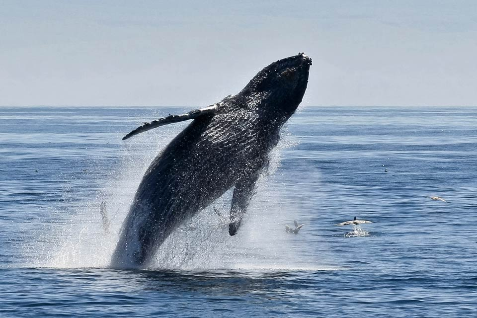

|
|
|
|
|
 |
The waters surrounding Channel Islands National Park are home to
many diverse and beautiful species of cetaceans (whales, dolphins,
and porpoises). About one third of the cetacean species found worldwide
can be seen right here in our own backyard, the Santa Barbara Channel.
The 27 species sighted in the channel include gray, blue, humpback, minke,
sperm, and pilot whales; orcas; Dall's porpoise; and Risso's, Pacific
white-sided, common, and bottlenose dolphins.
A variety of organisms can be found on and around the Channel Islands, from top predators like bald eagles and sharks, to intertidal residents such as seastars and barnaces, to the tiniest parasites living on other animals and plants.
Because of their isolation and remote nature, the Channel Islands support fewer native animal species than similar habitats on the mainland. Species that reached the islands were aerial, such as birds and bats, or rafted across the water on debris and other material. Over time some vertebrate species evolved into distinct subspecies on the islands. For example, the deer mouse and island fox are recognized as distinct subspecies on each of the islands they occur. A total of 23 endemic terrestrial animals have been identified in the park, including 11 land birds, that are Channel Island subspecies or races.
Current research focusing on terrestrial animals includes several studies on the island fox, one on the role of deer mice in affecting vegetation community recovery, and one on the response of lizards to the removal of rats on Anacapa. Ongoing monitoring efforts are measuring changes in amphibian and reptile population biology in response to pig removal on Santa Cruz Island, the number of bats occupying important maternity colonies on Santa Cruz, and mouse population dynamics as they relate to changes in fox numbers on San Miguel Island.
Each island has a unique complement of animals, dependant in many ways on the size of the island. Over time some of these species have evolved into new species, and are present today, while others, like the pygmy mammoth, the Santa Barbara Island song sparrow, and the giant deer mouse, evolved into unique island species before becoming extinct. While it may not appear so to relatively short-lived humans, the islands are still changing and evolving, and what lives here in the future may be very different than what we see today.